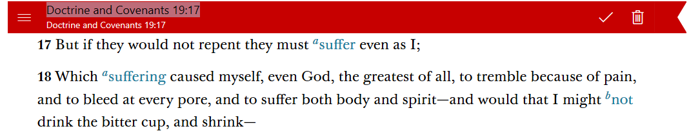

How Do I Use Bookmarks - Silent Video
How Do I Use Bookmarks - Silent Video How Do I Use Bookmarks - Silent Video
Bookmarks help you keep your place while you visit other locations in the library. You can access your bookmarks via the Bookmarks button on the navigation bar. Bookmarks can be sorted by name (alphanumerically) or by most recently used (with the most recently used bookmark appearing at the top).
Select any word in the verse or paragraph you want to be bookmarked. (If nothing is selected the bookmark will be added to the top of the screen or the first complete verse or paragraph.) You can add bookmarks by pressing the Bookmarks button ( ) to open the Bookmarks pane and pressing the New Bookmark button.
) to open the Bookmarks pane and pressing the New Bookmark button.

Once you have pressed the New Bookmark button, a red ribbon will appear above the selected verse or paragraph.
To chage the name while the name field is highlighted, type the new name. You can finish adding the bookmark by pressing anywhere other than the red bookmark ribbon or by pressing the checkmark on its right side.
Bookmarks synchronized from other devices that lead to content that hasn't yet been downloaded appear with a little downward-facing arrow on the red bookmark icon (). Press on a bookmark once to download the non-yet-downloaded book and press on it again to open it. If a bookmarked book has already been downloaded, you only need to press on it once to go to the bookmarked location.
If you find yourself with a large number of bookmarks, you may wish to consider using tags instead, where possible. Tags are a great way to organize pieces of gospel content by topic. You can learn more about tags in Chapter 10 - How Do I Use Tags?
To edit an existing bookmark, press on the bookmark icon () beside the verse or paragraph it marks. The bookmark icon will expand into a full ribbon, with options to rename and remove the bookmark, as pictured below. To rename the highlighted title of the bookmark, simply enter the new name. Press the check on the right side of the red bookmark ribbon to save the new name.
Renaming your bookmarks with easy-to-use names like "Personal Study" can make it easier to get back to where you last left off.
To update a bookmark, open the Bookmarks pane. Press the More button (...), then select "Update." The application will update the selected bookmark to match your current reading location.
You can also update a bookmark by dragging a bookmark from the Bookmarks pane to its new location in the text.
To reorder bookmarks, press and drag the bookmark you wish to move to its new location in the list and let go.

You can also update your bookmarks using the context menu. Select the paragraph where you would like to move your bookmark, press the hint bubble (), then press the arrow beside the bookmark option and select "Update". Pick the bookmark you'd like to update from the list to move it to its new location.
To adjust the placement of your bookmark within the chapter, press on the bookmark icon beside the verse or paragraph it marks. The bookmark icon will expand into a full ribbon. Press and drag the three lines on the left side of the ribbon to move the bookmark up or down in the chapter.
To delete a bookmark, press/click on the bookmark icon, then hit the Delete icon () in the title bar.